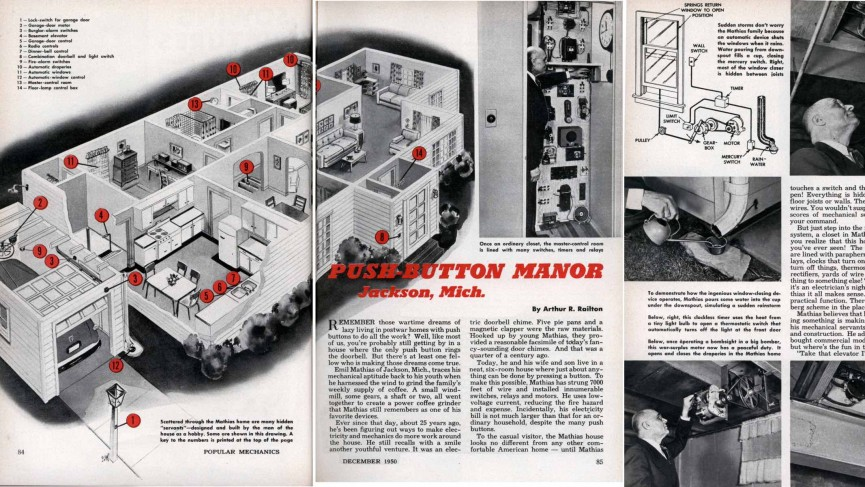

While the 1933 Chicago World's Fair had introduced the idea of the Homes of Tomorrow, the futuristic building exhibits within it featured nothing in the way of home automation. Instead, it was left to the likes of Alpha the robot, here, to sow the seed of a machine to do our bidding - even if, as in Alpha's case, that did come with a degree of attitude. Originally an exhibit at the Dome in Brighton, Alpha was trained to answer a series of voice commands which included firing a pistol because, obviously, that's a perfectly sensible idea for a prototype machine in front of a live audience. Funnily enough, Alpha managed to shoot his creator but his less forgiveable crimes were his behaviour towards women, although Alpha would probably argue that he was just a product of his times. Either way, robot assistants had a long way to go.
OK, so smoking wasn't this robot butler's main pastime but it's clearly one that he was happy to do on command along with a host of other activities which would make him fit right into the house of tomorrow pre-war style. Definitely a more sophisticated companion than Alpha, he was created by the now defunct Westinghouse Electric corporation as an exhibit for the 1939 New York World's Fair 'World of Tomorrow'. The same expo featured the famous Futurama ride by designer Norman Bel Geddes, sponsored by General Motors, which predicted how transportation would look 20 years from then.
Mathias made curtains that could be drawn automatically, a wind-powered coffee grinder, a vanity mirror for his wife that lit up when she opened the drawer of her dresser, and a series of clocks which time-orchestrated it all. Not sponsored, not for sale, it was basically your classic crackpot inventor's gaff.The first truly solid, wall-to-wall automated home was that created and lived in by a mechanical whiz known as Emil Mathias in Jackson, Michigan of the USA. A dab hand with a spanner, he created an abode where the majority of regular tasks could be achieved with the push of a button and it was so impressive, if impractical here and there, that it was featured in the magazine Popular Mechanics in 1950.
Sponsored by a plastics company, it's of little surprise that the key element of Disneyland's House of the Future was that it was made almost entirely of, yes, plastics. A vision of how the world would be in 1986, all the work-surfaces were plastic, the crockery was plastic and cupboards and fittings were plastic too. That might sound pretty hideous to modern designers but one of the big advantages of this 'wonder material' was that it was seriously light and that meant it was far easier to automate. There was an ultrasonic dishwasher to scrub up after meals, hands-free telephone communication, shelves that disappeared into the kitchen ceiling and, best of all, a connected self smart sink that you could raise up and down to suit the height of the person using it. The exhibit proved hugely successful with 425,000 visitors in its first six weeks and 20 million over the course of the 10 years in which it stood at the theme park.
1999 AD was Ford Motors's film version of how the smart home would be at the turn of the millennium. It's still a good 10 years off with much of the tech but there's some interesting ideas that they've got more or less bang on such as online shopping, digital banking and email. The smart oven is something beyond and home education is hardly ubiquitous but the fact that it's all powered by the central computer of a home which tracks diets and learning is surprisingly in keeping with what current smart home standards are trying to achieve in 2015. Ignore the unhealthy dose of 1960s sexism and the whole vision isn't a million miles away.
In 1979 Bob Masters came up with the Xanadu homes project which was based around the idea of creating dome-shaped houses out of a rigid foam insulation which could be far more energy and material efficient than what was currently the norm. The most famous of these was the Kissimmee Xanadu created by architect Roy Mason which was not only futuristic in look but also contained some pretty awesome ideas on smart home automation too. The house was run by a series of robot minds with which you could interact in a home concierge kind of way. There was a butler, a computer for cooking that monitored the health of the inhabitants and therefore knew which meals to prepare next, a gardener and a machine to take care of your calendar, alarms and weather reports too. Naturally, the environment and entertainment systems were also covered. Ultimately, it was the tech that did it for the Xanadu project. Although plans were to build 1,000 of them, by the time they got to the green light stage, all the smart gadgets had become too dated in design.
Microsoft's vision of the smart home from 1999 is weirdly bang on. OK, so it's not had to look ahead quite so far as some of the others on this list but it's still impressive. There's a home barcode scanner that auto-adds to your online shopping and even a rubbish bin that will do the same job if you forget. Plus, there's the time-shift web TV and EPG for complete home entertainment. From a Wareable point of view, though, it's hard to ignore the accuracy of the smart locks, home entry system, CCTV security and, maybe best of all, the lighting and environmental controls. It's just a pity that that Pocket PC and the Windows 3.11 OS that runs everything look so utterly dated. Come on, we all know the whole place would Blue Screen on you after two-year's use.
Set in the incredibly futuristic year known to you earthlings as 2015, the Living Tomorrow smart home in Brussels was a private initiative by father and son team Maurice and Frank Belien. A collaborative installation from 70 different companies, it's your classic European-look smart home of consumer tech trade shows gone by. There's wall-to-wall touchscreens to control everything from your groceries to your entertainment and shopping too. Ultimately, it looks a bit like staying in a CitizenM gadget hotel. Oddly enough, not too many of the ideas have actually moved on much and none of it still quite feels like it would work well enough to bother actually installing but perhaps we'll get a better look soon with the new Living Tomorrow 2020 house still under development. We'll be sure to add it to this list of future home visions once it's unveiled.
You might think we're done with the wacky ideas now that Amazon Alexa and co are making the smart home a reality. No, no. As recent as this January, Hyundai showed off a video of well, a smart chair that connects the home with a futuristic driverless car, hovering outside the window. The concept is low on actual features, aside from a projector of what looks like a phone screen on the wall, and high on hipster sci-fi style but we'll allow it based purely on the sheer randomness of it all. ETA? "Soon enough."